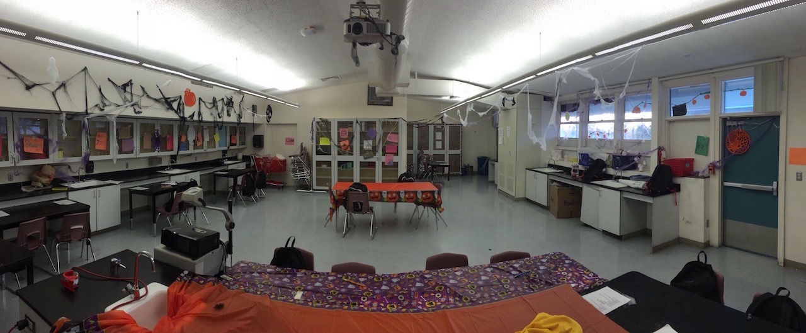
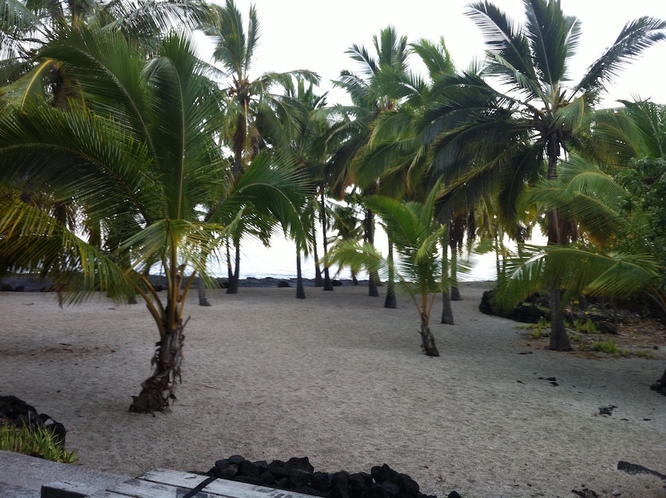

Hello and welcome. School is a very big part of many peoples lives. Whether it be personally attending, leading a class, or to the simpleness of driving kids to school. School encompasses a lot of peoples lives.
Should a Classrom look like this
 Picture credit Jacob Goldingor like this
 Picture Credit Jacob GoldingFor me both answers are correct. A classroom is a place where learning happens and that can come in many different forms
So students have to learn all these things things is a give amount of time. So what is a typical student scheduele. From the table we can see that the student after to spend more than an hour in a class learning. For those that do not know this is not the best since most people can only sustain their max learning potential for about an hour. Look at what MIT tells there students. This page shows even the top level programs want more breaks incorporated in there learning. They even provide link to the research that that supports this notion. The only real negative about the site is an nitpick about how spartan it looks. But I guess they care more about informantion than looks.